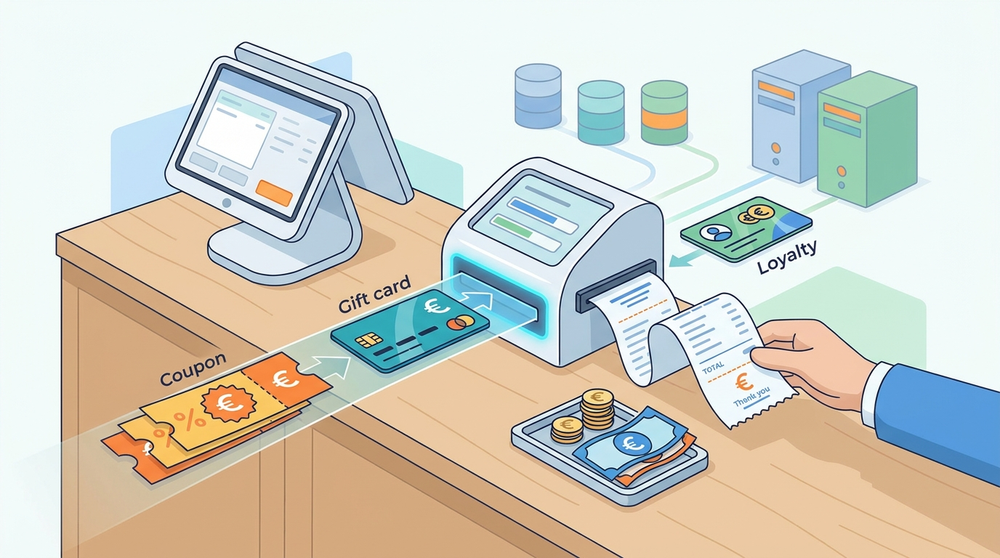

Part II — CATALOG: Products, Prices and Promises
Discounts, Coupons and Loyalty: Promotions Without Chaos
AI-assisted: researched and written with Claude Code, images generated with the Gemini API. How this works

Part II — CATALOG: Products, Prices and Promises
AI-assisted: researched and written with Claude Code, images generated with the Gemini API. How this works
